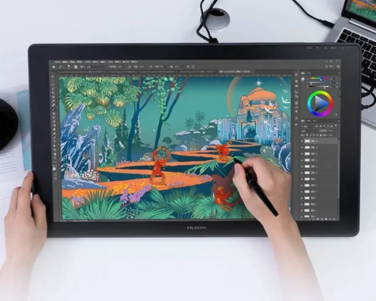

Me
Hi everyone! My name is Jhun Albert M. Mora, and I'm a second-year college student at Dalubhasaan ng Lungsod ng Lucena. I'm passionate about digital art and animation, and my dream is to become a professional animator. I'm still learning and developing my skills, but I'm dedicated to improving and working hard to achieve my goal

My Hobbies
"I'm fascinated by the art of animation. I use a drawing pad to create the individual frames, and I'm always learning new techniques to improve my skills. It's incredibly satisfying to see my characters move and tell stories."
My crush
Coca cola body(1.75L)